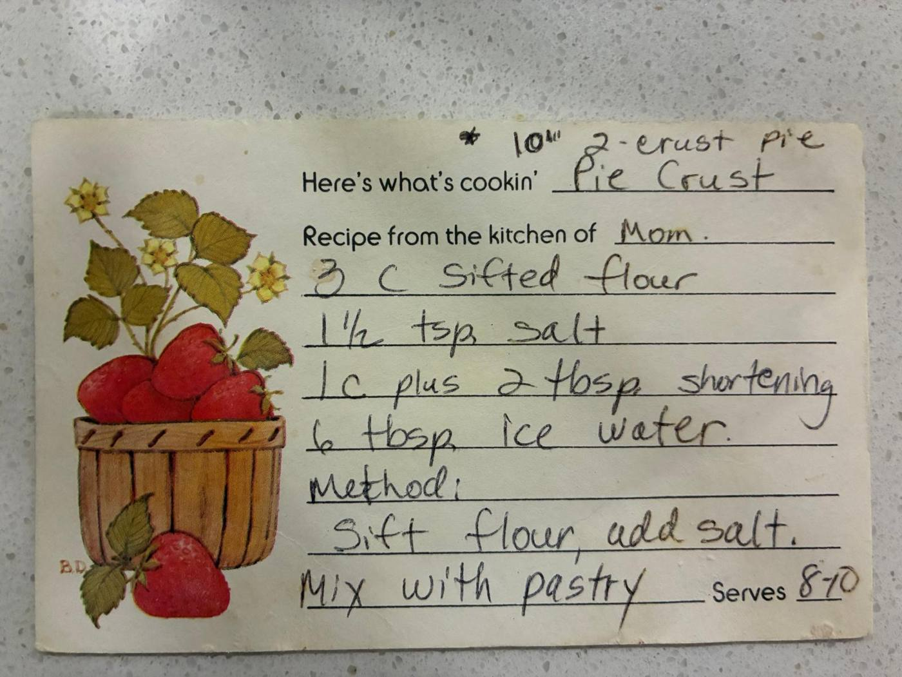
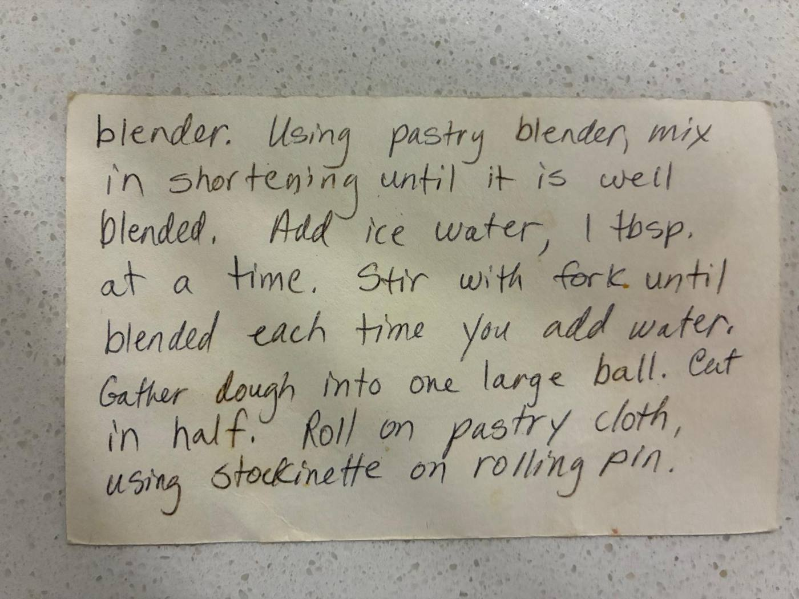

Desserts
Pie Crust
From the kitchen of Mom
Makes10-inch two-crust pie
Serves8–10


Mom's original card (front and back) · tap to enlarge
Ingredients
Method tap a step to mark it done
- Sift the flour and add the salt.
- Using a pastry blender, mix in the shortening until it is well blended.
- Add the ice water 1 tbsp at a time, stirring with a fork until blended each time you add water.
- Gather the dough into one large ball and cut it in half.
- Roll out on a pastry cloth, using a stockinette on the rolling pin.